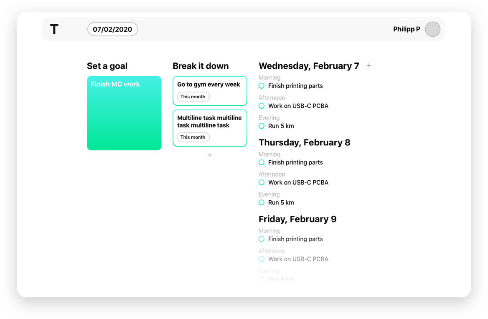
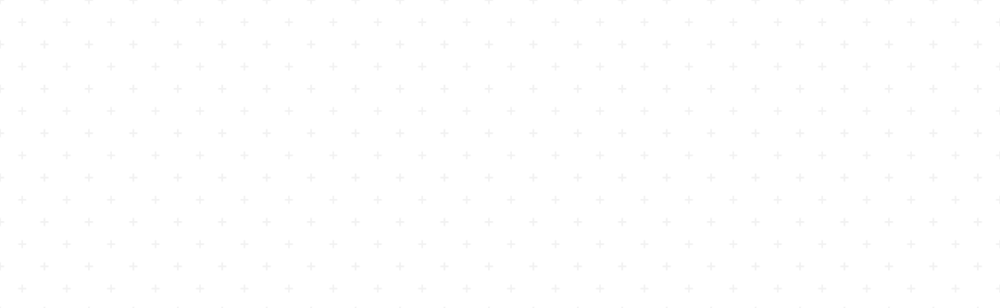
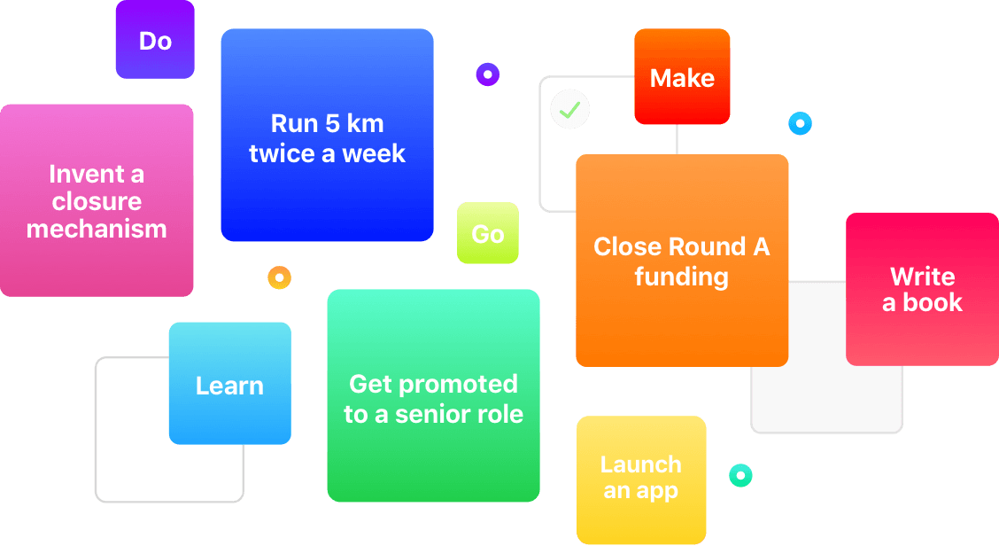

Tascana is a todo app helping you achieve big goals in a calm way. The key idea of Tascana is to shift the mindset of short term tasks (most of the current todo apps) to long term goals.
There is a task for the whole year
Remember when you wanted to achieve something big, but didn't know where to start? In Tascana we help people define what is truly important in the next 12 months
Use natural breaks
It is impossible to predict how many minutes or hours a given task will take, so why bother?
We help the user to group context-related tasks together and put them in one of 3 available time slots: morning, afternoon, and evening.
Tascana is open-source
You can track record of our progress, development and project planning on the Tascana's GitHub Page and Zeplin
May's progress
Right now, we are working on simplifying the ways to fill in the very first set of tasks. Our team will be greatful for your feedback and experience of using our service and other task trackers.
Split your goal
Reaching yearly goals might feel hard. But not if you break it in a few monthly projects! These will help the user to focus on a specific part of the job that is truly important.